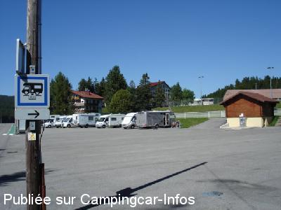
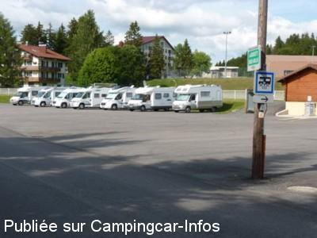
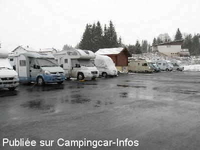
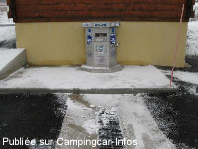

ASN = Aire de services avec stationnement nuit possible de :
LES ROUSSES
(N° 597)
Accès/adresse :
Route du Lac des Rousses
Parking de l'Aube
39220 LES ROUSSES
Parking de l'Aube
39220 LES ROUSSES
Latitude : (Nord) 46.48778° Décimaux ou 46° 29′ 16′′
Longitude : (Est) 6.06678° Décimaux ou 6° 4′ 0′′
Tarif : 2015
Stationnement gratuit
Eau ou électricité : 5 €
Paiement par carte bancaire
Type de borne : AIRESERVICES
Services :


Petit Inter-marché à proximité
Commerces en ville
Autres informations :
Ouvert toute l'année
30 emplacements
Tel : +33 (0)384 600 152

Le 26/07/2012 par J P Bedouet

Le 29/06/2011 par nicoletguy

Le 05/01/2010 par David et Cécile 12-2009

Le 05/01/2010 par David et Cécile 12-2009
de
varnier agnes
le 15/08/2015 :
§nous avons passé 3 nuits sur cette aire fin juillet 2015, 40 emplacements ca fait beaucoup pour moi pas plus de 30, pas très bruyante malgré au bord de la route et pas très loin du centre ville, village sympa beaucoup de choses à faire
§nous avons passé 3 nuits sur cette aire fin juillet 2015, 40 emplacements ca fait beaucoup pour moi pas plus de 30, pas très bruyante malgré au bord de la route et pas très loin du centre ville, village sympa beaucoup de choses à faire
de
Roland 61
le 25/07/2015 :
Grand parking gratuit sur bitume, calme la nuit. Magasin Intermarché à proximité. Lac à 1 km. Certains sentiers sont mal fléchés.
Grand parking gratuit sur bitume, calme la nuit. Magasin Intermarché à proximité. Lac à 1 km. Certains sentiers sont mal fléchés.
de
Eric (Ours_et_Fan)
le 13/04/2015 :
Bonjour,
Passé début avril 2015.
Le forfait eau (100l) + élect (55min) est passé à 5€.
A noter à l'office du tourisme un flyer spécial CC avec toutes les coordonnées GPS des sites touristiques de la ville et alentours.
Bonjour,
Passé début avril 2015.
Le forfait eau (100l) + élect (55min) est passé à 5€.
A noter à l'office du tourisme un flyer spécial CC avec toutes les coordonnées GPS des sites touristiques de la ville et alentours.
de
mike_lrk
le 07/08/2014 :
nous y avons passé une nuit en juillet 2014. Quelques voitures qui passent la nuit, mais l'endroit reste calme malgré tout. Nous étions une bonne trentaine de CC sur le parking. L'accès aux services est facile, mais le débit d'eau est faible et on fait moins de 100 litres en 10 min. La borne fonctionne avec le CB (pratique).
Tous les commerces au centre ville à 10min à pied ou à l'Intermarché à 200 m.
nous y avons passé une nuit en juillet 2014. Quelques voitures qui passent la nuit, mais l'endroit reste calme malgré tout. Nous étions une bonne trentaine de CC sur le parking. L'accès aux services est facile, mais le débit d'eau est faible et on fait moins de 100 litres en 10 min. La borne fonctionne avec le CB (pratique).
Tous les commerces au centre ville à 10min à pied ou à l'Intermarché à 200 m.
de
virolo007
le 02/08/2014 :
Nous y avons passé trois nuits très agréables. Belles randos au départ du parking. Attention, le lecteur de cartes bancaires n'accepte pas les cartes étrangères ! Nous avons essayé une Visa, deux mastercards et deux maestro en vain !! Merci au ccariste français de nous avoir permis d'utiliser sa carte contre remboursement en monnaie.
Nous y avons passé trois nuits très agréables. Belles randos au départ du parking. Attention, le lecteur de cartes bancaires n'accepte pas les cartes étrangères ! Nous avons essayé une Visa, deux mastercards et deux maestro en vain !! Merci au ccariste français de nous avoir permis d'utiliser sa carte contre remboursement en monnaie.
de
bernard42
le 19/07/2013 :
aire bien placé , circulation importante la journée mais nuit calme
aire qui fonctionne avec la CB c'est un bon procédé pour moi.
lors de notre passage le 11 juillet pas d'entrainement foot , effectivement le stade est au dessus des CC et une petite barrière nous sépare.
donc risque de ramasser les ballons sur nos CC
le vendredi joli marché avec des produits de qualité
aire bien placé , circulation importante la journée mais nuit calme
aire qui fonctionne avec la CB c'est un bon procédé pour moi.
lors de notre passage le 11 juillet pas d'entrainement foot , effectivement le stade est au dessus des CC et une petite barrière nous sépare.
donc risque de ramasser les ballons sur nos CC
le vendredi joli marché avec des produits de qualité
de
J P Bedouet
le 26/07/2012 :
Aire bien placée, proche du centre-ville et d'un Intermarché. Légère pente, facile à corriger.
Aire bien placée, proche du centre-ville et d'un Intermarché. Légère pente, facile à corriger.
de
jean
le 27/01/2012 :
belle aires , possibilité de stationner plus 15 camping car, une partie en dénivelé...
belle aires , possibilité de stationner plus 15 camping car, une partie en dénivelé...
de
le 09/10/2011 :
Bonjour,
Nous avons stationnés sur l'aire des Rousses,rue de lac,devant le stade...Le jeudi soir:entrainement de foot.Pas de filet entre le stade et les camping-cars.De plus le stade est en hauteur par rapport aux camping-cars situés,pour les plus proches,à moins de six mêtres des limites du stade.On tremble un peu pour les baies et les paraboles...
La ville dispose d'autres aires,moins exposées,et dont les services sont gratuits.
Cordialement.R.Sauvage
Bonjour,
Nous avons stationnés sur l'aire des Rousses,rue de lac,devant le stade...Le jeudi soir:entrainement de foot.Pas de filet entre le stade et les camping-cars.De plus le stade est en hauteur par rapport aux camping-cars situés,pour les plus proches,à moins de six mêtres des limites du stade.On tremble un peu pour les baies et les paraboles...
La ville dispose d'autres aires,moins exposées,et dont les services sont gratuits.
Cordialement.R.Sauvage
de
j. Chalavon
le 21/04/2011 :
Je rentre des Rousses, j'ai trouvé cette aire très agréable, (certes il faut caler!!!)près du centre, merci à la municipalité.
Je rentre des Rousses, j'ai trouvé cette aire très agréable, (certes il faut caler!!!)près du centre, merci à la municipalité.
de
le viking
le 24/12/2009 :
Bonjour. Je rentre des Rousses, beaucoup de neige et du grand froid. La borne a été déplacée et se trouve maintenant adossée au cabanon du parking. Le tarif aussi a changé 3,60€ pour 55 mn d'électricité ou 10 mn pour 100 litres d'eau et paiement uniquement par carte bancaire. Je joins une photo de l'aire, une bonne adresse pour manger une fondue royale aux morilles. Il s'agit du chalet Regain aux 03.84.60.00.55, petit estomac attention ... §
Bonjour. Je rentre des Rousses, beaucoup de neige et du grand froid. La borne a été déplacée et se trouve maintenant adossée au cabanon du parking. Le tarif aussi a changé 3,60€ pour 55 mn d'électricité ou 10 mn pour 100 litres d'eau et paiement uniquement par carte bancaire. Je joins une photo de l'aire, une bonne adresse pour manger une fondue royale aux morilles. Il s'agit du chalet Regain aux 03.84.60.00.55, petit estomac attention ... §
de
David et Cécile
le 06/01/2009 :
Nous avons passé la semaine entre Noël et Nouvel An sur ce parking. Idéal pour faire des balades dans la neige, de la luge et du ski de fond... dans le froid pour tuer les microbes. Nuits gratuites et très calmes. Jetons à 3,5€ pour environ 100 litres d'eau à la mairie. Prendre des bouteilles de gaz pleines, car plus de stock dans les magasins en période de grand froid (-15°C).
Cette station est très bien pour les familles avec des enfants, mais pour le ski alpin, les pistes baby étaient fermées ! (nécessité de prendre la navette devant le parking pour se rendre sur les pistes).
Nous avons passé la semaine entre Noël et Nouvel An sur ce parking. Idéal pour faire des balades dans la neige, de la luge et du ski de fond... dans le froid pour tuer les microbes. Nuits gratuites et très calmes. Jetons à 3,5€ pour environ 100 litres d'eau à la mairie. Prendre des bouteilles de gaz pleines, car plus de stock dans les magasins en période de grand froid (-15°C).
Cette station est très bien pour les familles avec des enfants, mais pour le ski alpin, les pistes baby étaient fermées ! (nécessité de prendre la navette devant le parking pour se rendre sur les pistes).
de
le 18/02/2008 :
Nous y avons dormi les 19 et 20 janvier 2008. Borne Raclet. Eau et électricité payantes. 20 places environ. L'aire se situe à 200 mètres environ du village des Rousses. Merci à la municipalité pour cette opportunité dans une station de montagne. La fromagerie des Rousses à côté de la Poste vend de l'excellent fromage : Comté, Morbier et Bleu de Gex. De plus, on est à un jet de "menhir" de La Suisse. Je confirme les coordonnées GPS.
Nous y avons dormi les 19 et 20 janvier 2008. Borne Raclet. Eau et électricité payantes. 20 places environ. L'aire se situe à 200 mètres environ du village des Rousses. Merci à la municipalité pour cette opportunité dans une station de montagne. La fromagerie des Rousses à côté de la Poste vend de l'excellent fromage : Comté, Morbier et Bleu de Gex. De plus, on est à un jet de "menhir" de La Suisse. Je confirme les coordonnées GPS.